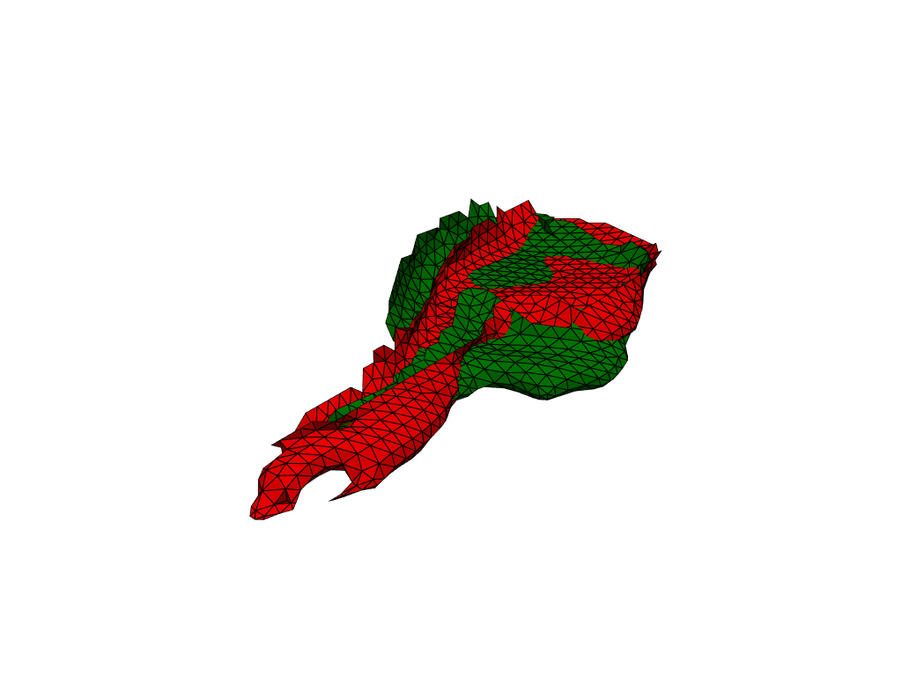

LDDMM: how to register a mesh against a template?#
TODO: create a how to fully emulating Nicolas’ script (i.e. including registration parameters)
[11]:
from pathlib import Path
import herbrain.lddmm as lddmm
import pyvista as pv
from polpo.preprocessing import (
DataPrinter,
IfCondition,
IndexSelector,
Map,
PartiallyInitializedStep,
Sorter,
)
from polpo.preprocessing.dict import (
DictKeysFilter,
DictToTuplesList,
HashWithIncoming,
)
from polpo.preprocessing.load import FigsharePregnancyDataLoader
from polpo.preprocessing.mesh.conversion import PvFromData
from polpo.preprocessing.mesh.filter import PvSelectColor
from polpo.preprocessing.mesh.io import PvWriter
from polpo.preprocessing.mesh.registration import PvAlign
from polpo.preprocessing.mesh.smoothing import PvSmoothTaubin
from polpo.preprocessing.mesh.transform import MeshCenterer
from polpo.preprocessing.mri import (
BRAINSTRUCT2COLOR,
MeshExtractorFromSegmentedImage,
MriImageLoader,
)
from polpo.preprocessing.path import FileFinder, FileRule, PathShortener
from polpo.preprocessing.str import DigitFinder
[12]:
STATIC_VIZ = True
if STATIC_VIZ:
pv.set_jupyter_backend("static")
Load meshes#
We start by loading two selected meshes.
[13]:
source_index = 3
target_index = 25
struct_name = "PostHipp"
# struct_name = -1
[14]:
# TODO: encode in file
reflected_keys = (
7,
8,
9,
10,
11,
12,
13,
14,
16,
17,
18,
19,
20,
21,
22,
23,
24,
25,
26,
)
[15]:
folders_selector = (
(
FigsharePregnancyDataLoader(
data_dir="~/.herbrain/data/pregnancy",
remote_path="Segmentations",
)
+ FileFinder()
+ Sorter()
)
+ HashWithIncoming(
key_step=Map([PathShortener(), DigitFinder(index=0)]),
)
+ DictKeysFilter(values=[source_index, target_index])
+ DictToTuplesList()
)
left_file_selector = FileFinder(
rules=[
FileRule(value="left", func="startswith"),
FileRule(value=".nii.gz", func="endswith"),
]
)
right_file_selector = FileFinder(
rules=[
FileRule(value="right", func="startswith"),
FileRule(value=".nii.gz", func="endswith"),
]
)
file_selector = IfCondition(
step=IndexSelector(1) + DataPrinter() + left_file_selector,
else_step=IndexSelector(1) + right_file_selector,
condition=lambda datum: datum[0] not in reflected_keys,
)
mri2mesh = MriImageLoader() + MeshExtractorFromSegmentedImage() + PvFromData()
if struct_name == -1:
struct_selector = lambda x: x
else:
struct_selector = PvSelectColor(
color=BRAINSTRUCT2COLOR[struct_name],
extract_surface=True,
)
pipe = folders_selector + Map(file_selector + mri2mesh + struct_selector)
[16]:
meshes = pipe()
INFO: Data has already been downloaded... using cached file ('/home/luisfpereira/.herbrain/data/pregnancy/Segmentations').
/home/luisfpereira/.herbrain/data/pregnancy/Segmentations/BB03
[17]:
pl = pv.Plotter(border=False)
pl.add_mesh(meshes[0], show_edges=True, color="red")
pl.add_mesh(meshes[1], show_edges=True, color="green")
pl.show()

Preprocessing#
As we can see in the visualization, meshes are not rigid aligned. Preprocessing takes care of this kind of details, before applying LDDMM.
[18]:
# TODO: consider decimation if above a given number of points
prep_pipe = Map(MeshCenterer() + PvSmoothTaubin(n_iter=20)) + PartiallyInitializedStep(
Step=lambda **kwargs: Map(PvAlign(**kwargs)),
_target=lambda x: x[0],
max_iterations=10,
)
[25]:
meshes = prep_pipe(meshes)
[mesh.points.shape[0] for mesh in meshes]
[25]:
[666, 662]
[20]:
pl = pv.Plotter(border=False)
pl.add_mesh(meshes[0], show_edges=True, color="red")
pl.add_mesh(meshes[1], show_edges=True, color="green")
pl.show()

LDDMM#
Create folder where to store the results.
[21]:
registration_dir = Path("results")
initial_registration_dir = registration_dir / "initial_registration"
registration_dir.mkdir(exist_ok=True) # TODO: make it to false
Save meshes in vtk format (as required by deformetrica).
[22]:
meshes_writer = Map(PvWriter(dirname=registration_dir, ext="vtk"))
mesh_filenames = [f"mesh_{which}" for which in ["source", "target"]]
mesh_filenames = meshes_writer(list(zip(mesh_filenames, meshes)))
Use LDDMM to register the meshes.
[23]:
# TODO: need to adapt registration parameters to substructure
lddmm.registration(
mesh_filenames[0],
mesh_filenames[1],
output_dir=initial_registration_dir,
kernel_width=4.0,
regularisation=1.0,
max_iter=2000,
freeze_control_points=False,
attachment_kernel_width=2.0,
metric="varifold",
tol=1e-16,
filter_cp=True,
threshold=0.75,
)
Logger has been set to: DEBUG
>> No initial CP spacing given: using diffeo kernel width of 4.0
OMP_NUM_THREADS was not found in environment variables. An automatic value will be set.
OMP_NUM_THREADS will be set to 10
context has already been set
>> No specified state-file. By default, Deformetrica state will by saved in file: results/initial_registration/deformetrica-state.p.
>> Using a Sobolev gradient for the template data with the ScipyLBFGS estimator memory length being larger than 1. Beware: that can be tricky.
instantiating kernel torch with kernel_width 4.0 and gpu_mode GpuMode.KERNEL. addr: 0x72f1f3502550
instantiating kernel torch with kernel_width 2.0 and gpu_mode GpuMode.KERNEL. addr: 0x72f1e3423590
>> Set of 110 control points defined.
>> Momenta initialized to zero, for 1 subjects.
dtype=float32
>> Started estimator: ScipyOptimize
>> Scipy optimization method: L-BFGS-B
------------------------------------- Iteration: 1 -------------------------------------
------------------------------------- Iteration: 20 -------------------------------------
>> Log-likelihood = -3.404E+02 [ attachment = -1.765E+02 ; regularity = -1.639E+02 ]
>> Log-likelihood = -3.354E+02 [ attachment = -1.748E+02 ; regularity = -1.607E+02 ]
------------------------------------- Iteration: 40 -------------------------------------
>> Log-likelihood = -2.659E+02 [ attachment = -1.012E+02 ; regularity = -1.647E+02 ]
------------------------------------- Iteration: 60 -------------------------------------
>> Log-likelihood = -2.499E+02 [ attachment = -8.582E+01 ; regularity = -1.641E+02 ]
>> Log-likelihood = -2.484E+02 [ attachment = -8.384E+01 ; regularity = -1.646E+02 ]
------------------------------------- Iteration: 80 -------------------------------------
>> Log-likelihood = -2.406E+02 [ attachment = -8.306E+01 ; regularity = -1.576E+02 ]
------------------------------------- Iteration: 100 -------------------------------------
>> Log-likelihood = -2.355E+02 [ attachment = -7.697E+01 ; regularity = -1.585E+02 ]
------------------------------------- Iteration: 120 -------------------------------------
>> Log-likelihood = -2.324E+02 [ attachment = -7.376E+01 ; regularity = -1.586E+02 ]
------------------------------------- Iteration: 140 -------------------------------------
>> Log-likelihood = -2.305E+02 [ attachment = -7.226E+01 ; regularity = -1.582E+02 ]
>> Log-likelihood = -2.304E+02 [ attachment = -7.211E+01 ; regularity = -1.583E+02 ]
------------------------------------- Iteration: 160 -------------------------------------
>> Log-likelihood = -2.290E+02 [ attachment = -7.131E+01 ; regularity = -1.577E+02 ]
------------------------------------- Iteration: 180 -------------------------------------
>> Log-likelihood = -2.281E+02 [ attachment = -7.124E+01 ; regularity = -1.568E+02 ]
------------------------------------- Iteration: 200 -------------------------------------
>> Log-likelihood = -2.274E+02 [ attachment = -7.029E+01 ; regularity = -1.571E+02 ]
------------------------------------- Iteration: 220 -------------------------------------
>> Log-likelihood = -2.267E+02 [ attachment = -6.982E+01 ; regularity = -1.569E+02 ]
------------------------------------- Iteration: 240 -------------------------------------
>> Log-likelihood = -2.262E+02 [ attachment = -6.952E+01 ; regularity = -1.566E+02 ]
------------------------------------- Iteration: 260 -------------------------------------
>> Log-likelihood = -2.256E+02 [ attachment = -6.889E+01 ; regularity = -1.567E+02 ]
------------------------------------- Iteration: 280 -------------------------------------
>> Log-likelihood = -2.253E+02 [ attachment = -6.851E+01 ; regularity = -1.568E+02 ]
------------------------------------- Iteration: 300 -------------------------------------
>> Log-likelihood = -2.249E+02 [ attachment = -6.802E+01 ; regularity = -1.569E+02 ]
------------------------------------- Iteration: 320 -------------------------------------
>> Log-likelihood = -2.247E+02 [ attachment = -6.782E+01 ; regularity = -1.569E+02 ]
>> Log-likelihood = -2.247E+02 [ attachment = -6.783E+01 ; regularity = -1.568E+02 ]
------------------------------------- Iteration: 340 -------------------------------------
>> Log-likelihood = -2.244E+02 [ attachment = -6.761E+01 ; regularity = -1.568E+02 ]
------------------------------------- Iteration: 360 -------------------------------------
>> Log-likelihood = -2.242E+02 [ attachment = -6.794E+01 ; regularity = -1.563E+02 ]
>> Log-likelihood = -2.242E+02 [ attachment = -6.778E+01 ; regularity = -1.564E+02 ]
------------------------------------- Iteration: 380 -------------------------------------
>> Log-likelihood = -2.240E+02 [ attachment = -6.754E+01 ; regularity = -1.564E+02 ]
------------------------------------- Iteration: 400 -------------------------------------
>> Log-likelihood = -2.237E+02 [ attachment = -6.756E+01 ; regularity = -1.562E+02 ]
------------------------------------- Iteration: 420 -------------------------------------
>> Log-likelihood = -2.235E+02 [ attachment = -6.726E+01 ; regularity = -1.562E+02 ]
------------------------------------- Iteration: 440 -------------------------------------
>> Log-likelihood = -2.233E+02 [ attachment = -6.725E+01 ; regularity = -1.560E+02 ]
------------------------------------- Iteration: 460 -------------------------------------
>> Log-likelihood = -2.231E+02 [ attachment = -6.723E+01 ; regularity = -1.558E+02 ]
------------------------------------- Iteration: 480 -------------------------------------
>> Log-likelihood = -2.229E+02 [ attachment = -6.711E+01 ; regularity = -1.557E+02 ]
------------------------------------- Iteration: 500 -------------------------------------
>> Log-likelihood = -2.227E+02 [ attachment = -6.704E+01 ; regularity = -1.556E+02 ]
------------------------------------- Iteration: 520 -------------------------------------
>> Log-likelihood = -2.225E+02 [ attachment = -6.683E+01 ; regularity = -1.556E+02 ]
------------------------------------- Iteration: 540 -------------------------------------
>> Log-likelihood = -2.223E+02 [ attachment = -6.687E+01 ; regularity = -1.554E+02 ]
------------------------------------- Iteration: 560 -------------------------------------
>> Log-likelihood = -2.221E+02 [ attachment = -6.666E+01 ; regularity = -1.555E+02 ]
------------------------------------- Iteration: 580 -------------------------------------
>> Log-likelihood = -2.219E+02 [ attachment = -6.657E+01 ; regularity = -1.554E+02 ]
------------------------------------- Iteration: 600 -------------------------------------
>> Log-likelihood = -2.218E+02 [ attachment = -6.657E+01 ; regularity = -1.552E+02 ]
------------------------------------- Iteration: 620 -------------------------------------
>> Log-likelihood = -2.216E+02 [ attachment = -6.579E+01 ; regularity = -1.558E+02 ]
------------------------------------- Iteration: 640 -------------------------------------
>> Log-likelihood = -2.214E+02 [ attachment = -6.611E+01 ; regularity = -1.553E+02 ]
------------------------------------- Iteration: 660 -------------------------------------
>> Log-likelihood = -2.213E+02 [ attachment = -6.588E+01 ; regularity = -1.554E+02 ]
------------------------------------- Iteration: 680 -------------------------------------
>> Log-likelihood = -2.211E+02 [ attachment = -6.582E+01 ; regularity = -1.553E+02 ]
------------------------------------- Iteration: 700 -------------------------------------
>> Log-likelihood = -2.210E+02 [ attachment = -6.603E+01 ; regularity = -1.550E+02 ]
------------------------------------- Iteration: 720 -------------------------------------
>> Log-likelihood = -2.208E+02 [ attachment = -6.584E+01 ; regularity = -1.550E+02 ]
------------------------------------- Iteration: 740 -------------------------------------
>> Log-likelihood = -2.207E+02 [ attachment = -6.625E+01 ; regularity = -1.544E+02 ]
------------------------------------- Iteration: 760 -------------------------------------
>> Log-likelihood = -2.205E+02 [ attachment = -6.606E+01 ; regularity = -1.545E+02 ]
>> Log-likelihood = -2.205E+02 [ attachment = -6.595E+01 ; regularity = -1.545E+02 ]
------------------------------------- Iteration: 780 -------------------------------------
>> Log-likelihood = -2.203E+02 [ attachment = -6.614E+01 ; regularity = -1.542E+02 ]
------------------------------------- Iteration: 800 -------------------------------------
>> Log-likelihood = -2.202E+02 [ attachment = -6.620E+01 ; regularity = -1.540E+02 ]
------------------------------------- Iteration: 820 -------------------------------------
>> Log-likelihood = -2.200E+02 [ attachment = -6.642E+01 ; regularity = -1.536E+02 ]
------------------------------------- Iteration: 840 -------------------------------------
>> Log-likelihood = -2.198E+02 [ attachment = -6.603E+01 ; regularity = -1.538E+02 ]
------------------------------------- Iteration: 860 -------------------------------------
>> Log-likelihood = -2.196E+02 [ attachment = -6.599E+01 ; regularity = -1.536E+02 ]
------------------------------------- Iteration: 880 -------------------------------------
>> Log-likelihood = -2.194E+02 [ attachment = -6.580E+01 ; regularity = -1.536E+02 ]
>> Log-likelihood = -2.194E+02 [ attachment = -6.572E+01 ; regularity = -1.537E+02 ]
------------------------------------- Iteration: 900 -------------------------------------
>> Log-likelihood = -2.192E+02 [ attachment = -6.590E+01 ; regularity = -1.533E+02 ]
------------------------------------- Iteration: 920 -------------------------------------
>> Log-likelihood = -2.190E+02 [ attachment = -6.587E+01 ; regularity = -1.531E+02 ]
------------------------------------- Iteration: 940 -------------------------------------
>> Log-likelihood = -2.188E+02 [ attachment = -6.557E+01 ; regularity = -1.532E+02 ]
------------------------------------- Iteration: 960 -------------------------------------
>> Log-likelihood = -2.185E+02 [ attachment = -6.578E+01 ; regularity = -1.528E+02 ]
------------------------------------- Iteration: 980 -------------------------------------
>> Log-likelihood = -2.183E+02 [ attachment = -6.547E+01 ; regularity = -1.528E+02 ]
------------------------------------- Iteration: 1000 -------------------------------------
>> Log-likelihood = -2.181E+02 [ attachment = -6.533E+01 ; regularity = -1.528E+02 ]
>> Log-likelihood = -2.181E+02 [ attachment = -6.521E+01 ; regularity = -1.529E+02 ]
------------------------------------- Iteration: 1020 -------------------------------------
>> Log-likelihood = -2.178E+02 [ attachment = -6.521E+01 ; regularity = -1.526E+02 ]
------------------------------------- Iteration: 1040 -------------------------------------
>> Log-likelihood = -2.176E+02 [ attachment = -6.531E+01 ; regularity = -1.523E+02 ]
------------------------------------- Iteration: 1060 -------------------------------------
>> Log-likelihood = -2.174E+02 [ attachment = -6.558E+01 ; regularity = -1.519E+02 ]
------------------------------------- Iteration: 1080 -------------------------------------
>> Log-likelihood = -2.172E+02 [ attachment = -6.535E+01 ; regularity = -1.519E+02 ]
------------------------------------- Iteration: 1100 -------------------------------------
>> Log-likelihood = -2.170E+02 [ attachment = -6.535E+01 ; regularity = -1.517E+02 ]
------------------------------------- Iteration: 1120 -------------------------------------
>> Log-likelihood = -2.168E+02 [ attachment = -6.558E+01 ; regularity = -1.512E+02 ]
------------------------------------- Iteration: 1140 -------------------------------------
>> Log-likelihood = -2.165E+02 [ attachment = -6.533E+01 ; regularity = -1.512E+02 ]
------------------------------------- Iteration: 1160 -------------------------------------
>> Log-likelihood = -2.163E+02 [ attachment = -6.562E+01 ; regularity = -1.507E+02 ]
------------------------------------- Iteration: 1180 -------------------------------------
>> Log-likelihood = -2.160E+02 [ attachment = -6.572E+01 ; regularity = -1.503E+02 ]
------------------------------------- Iteration: 1200 -------------------------------------
>> Log-likelihood = -2.157E+02 [ attachment = -6.627E+01 ; regularity = -1.494E+02 ]
------------------------------------- Iteration: 1220 -------------------------------------
>> Log-likelihood = -2.154E+02 [ attachment = -6.629E+01 ; regularity = -1.491E+02 ]
------------------------------------- Iteration: 1240 -------------------------------------
>> Log-likelihood = -2.151E+02 [ attachment = -6.636E+01 ; regularity = -1.488E+02 ]
------------------------------------- Iteration: 1260 -------------------------------------
>> Log-likelihood = -2.149E+02 [ attachment = -6.715E+01 ; regularity = -1.478E+02 ]
------------------------------------- Iteration: 1280 -------------------------------------
>> Log-likelihood = -2.146E+02 [ attachment = -6.723E+01 ; regularity = -1.474E+02 ]
------------------------------------- Iteration: 1300 -------------------------------------
>> Log-likelihood = -2.143E+02 [ attachment = -6.713E+01 ; regularity = -1.472E+02 ]
------------------------------------- Iteration: 1320 -------------------------------------
>> Log-likelihood = -2.140E+02 [ attachment = -6.693E+01 ; regularity = -1.471E+02 ]
------------------------------------- Iteration: 1340 -------------------------------------
>> Log-likelihood = -2.137E+02 [ attachment = -6.709E+01 ; regularity = -1.466E+02 ]
------------------------------------- Iteration: 1360 -------------------------------------
>> Log-likelihood = -2.134E+02 [ attachment = -6.683E+01 ; regularity = -1.466E+02 ]
------------------------------------- Iteration: 1380 -------------------------------------
>> Log-likelihood = -2.131E+02 [ attachment = -6.664E+01 ; regularity = -1.465E+02 ]
------------------------------------- Iteration: 1400 -------------------------------------
>> Log-likelihood = -2.128E+02 [ attachment = -6.769E+01 ; regularity = -1.451E+02 ]
------------------------------------- Iteration: 1420 -------------------------------------
>> Log-likelihood = -2.126E+02 [ attachment = -6.808E+01 ; regularity = -1.446E+02 ]
>> Log-likelihood = -2.126E+02 [ attachment = -6.795E+01 ; regularity = -1.447E+02 ]
------------------------------------- Iteration: 1440 -------------------------------------
>> Log-likelihood = -2.125E+02 [ attachment = -6.793E+01 ; regularity = -1.445E+02 ]
>> Log-likelihood = -2.124E+02 [ attachment = -6.790E+01 ; regularity = -1.445E+02 ]
------------------------------------- Iteration: 1460 -------------------------------------
>> Log-likelihood = -2.121E+02 [ attachment = -6.741E+01 ; regularity = -1.447E+02 ]
------------------------------------- Iteration: 1480 -------------------------------------
>> Log-likelihood = -2.118E+02 [ attachment = -6.785E+01 ; regularity = -1.440E+02 ]
------------------------------------- Iteration: 1500 -------------------------------------
>> Log-likelihood = -2.116E+02 [ attachment = -6.867E+01 ; regularity = -1.429E+02 ]
------------------------------------- Iteration: 1520 -------------------------------------
>> Log-likelihood = -2.113E+02 [ attachment = -6.898E+01 ; regularity = -1.423E+02 ]
------------------------------------- Iteration: 1540 -------------------------------------
>> Log-likelihood = -2.111E+02 [ attachment = -6.889E+01 ; regularity = -1.422E+02 ]
------------------------------------- Iteration: 1560 -------------------------------------
>> Log-likelihood = -2.108E+02 [ attachment = -6.881E+01 ; regularity = -1.420E+02 ]
------------------------------------- Iteration: 1580 -------------------------------------
>> Log-likelihood = -2.105E+02 [ attachment = -6.924E+01 ; regularity = -1.413E+02 ]
------------------------------------- Iteration: 1600 -------------------------------------
>> Log-likelihood = -2.102E+02 [ attachment = -6.983E+01 ; regularity = -1.404E+02 ]
------------------------------------- Iteration: 1620 -------------------------------------
>> Log-likelihood = -2.098E+02 [ attachment = -6.969E+01 ; regularity = -1.401E+02 ]
------------------------------------- Iteration: 1640 -------------------------------------
>> Log-likelihood = -2.094E+02 [ attachment = -6.943E+01 ; regularity = -1.400E+02 ]
------------------------------------- Iteration: 1660 -------------------------------------
>> Log-likelihood = -2.089E+02 [ attachment = -6.987E+01 ; regularity = -1.391E+02 ]
------------------------------------- Iteration: 1680 -------------------------------------
>> Log-likelihood = -2.086E+02 [ attachment = -7.008E+01 ; regularity = -1.386E+02 ]
------------------------------------- Iteration: 1700 -------------------------------------
>> Log-likelihood = -2.081E+02 [ attachment = -7.056E+01 ; regularity = -1.375E+02 ]
------------------------------------- Iteration: 1720 -------------------------------------
>> Log-likelihood = -2.076E+02 [ attachment = -7.122E+01 ; regularity = -1.364E+02 ]
------------------------------------- Iteration: 1740 -------------------------------------
>> Log-likelihood = -2.071E+02 [ attachment = -7.094E+01 ; regularity = -1.361E+02 ]
------------------------------------- Iteration: 1760 -------------------------------------
>> Log-likelihood = -2.066E+02 [ attachment = -7.061E+01 ; regularity = -1.360E+02 ]
------------------------------------- Iteration: 1780 -------------------------------------
>> Log-likelihood = -2.062E+02 [ attachment = -7.040E+01 ; regularity = -1.358E+02 ]
------------------------------------- Iteration: 1800 -------------------------------------
>> Log-likelihood = -2.058E+02 [ attachment = -7.027E+01 ; regularity = -1.356E+02 ]
------------------------------------- Iteration: 1820 -------------------------------------
>> Log-likelihood = -2.054E+02 [ attachment = -7.032E+01 ; regularity = -1.351E+02 ]
------------------------------------- Iteration: 1840 -------------------------------------
>> Log-likelihood = -2.051E+02 [ attachment = -6.996E+01 ; regularity = -1.352E+02 ]
------------------------------------- Iteration: 1860 -------------------------------------
>> Log-likelihood = -2.048E+02 [ attachment = -6.945E+01 ; regularity = -1.353E+02 ]
------------------------------------- Iteration: 1880 -------------------------------------
>> Log-likelihood = -2.043E+02 [ attachment = -6.990E+01 ; regularity = -1.344E+02 ]
------------------------------------- Iteration: 1900 -------------------------------------
>> Log-likelihood = -2.040E+02 [ attachment = -6.982E+01 ; regularity = -1.342E+02 ]
------------------------------------- Iteration: 1920 -------------------------------------
>> Log-likelihood = -2.038E+02 [ attachment = -7.006E+01 ; regularity = -1.337E+02 ]
------------------------------------- Iteration: 1940 -------------------------------------
>> Log-likelihood = -2.035E+02 [ attachment = -6.992E+01 ; regularity = -1.336E+02 ]
------------------------------------- Iteration: 1960 -------------------------------------
>> Log-likelihood = -2.032E+02 [ attachment = -7.005E+01 ; regularity = -1.332E+02 ]
------------------------------------- Iteration: 1980 -------------------------------------
>> Log-likelihood = -2.030E+02 [ attachment = -7.027E+01 ; regularity = -1.328E+02 ]
------------------------------------- Iteration: 2000 -------------------------------------
>> Log-likelihood = -2.027E+02 [ attachment = -6.996E+01 ; regularity = -1.328E+02 ]
>> Gradient at Termination: 783.6768663413264
>> `callback` raised `StopIteration`.
>> Estimation took: 02 minutes and 41 seconds
instantiating kernel torch with kernel_width 4.0 and gpu_mode GpuMode.KERNEL. addr: 0x72f1e41e5510
Deformetrica.__del__()
[23]:
time.struct_time(tm_year=2025, tm_mon=3, tm_mday=17, tm_hour=21, tm_min=2, tm_sec=25, tm_wday=0, tm_yday=76, tm_isdst=0)